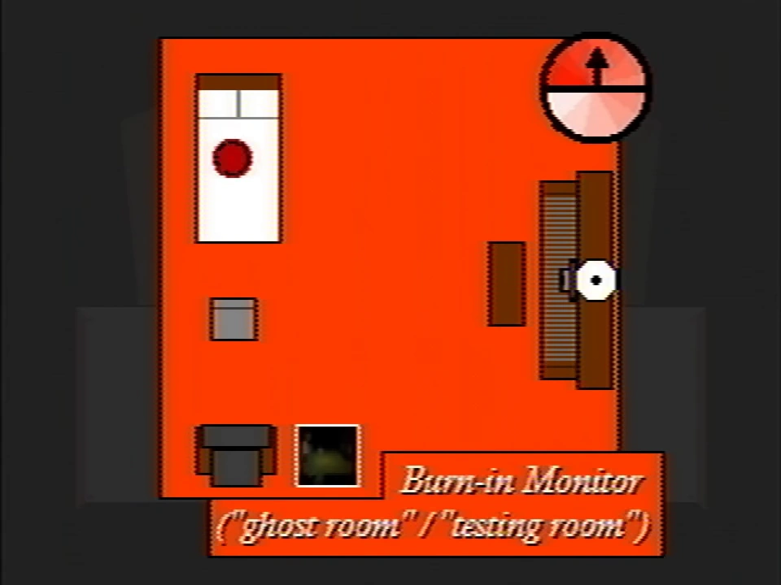
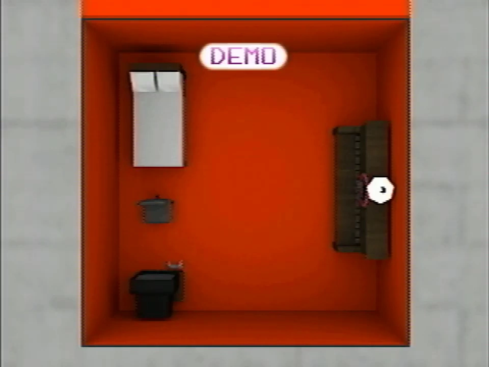
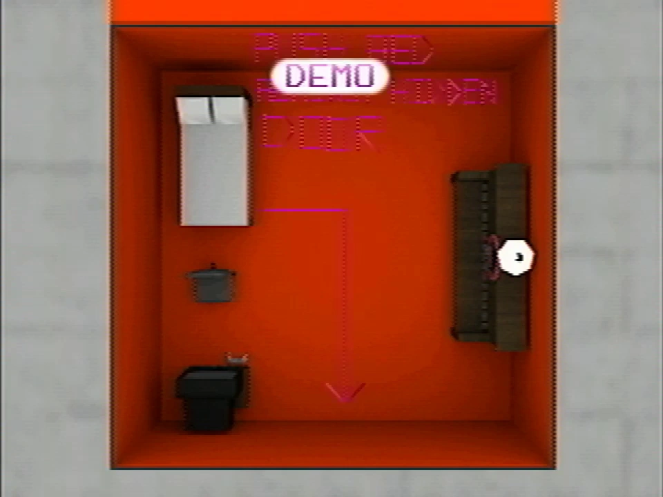

Ghost room
This article is about a topic that has no widely accepted interpretation or clear details.
{kind=link}

{kind=link}
The room displayed by the Burn-in Monitor
Ghost rooms (also known as testing rooms) are small orange rooms depicted by the Burn-in Monitor and within the school's third floor. Each room contains a bed, chair, piano and a PlayStation.
Very little is known about the ghost rooms and their purpose.
History
{kind=link}

{kind=link}
The image of room 1
A ghost room is first depicted during Petscop 16 via the Burn-in Monitor.
In Petscop 17, a message within the pause menu says "The ghost room is a ship in a bottle."
During the recording shown in Petscop 23, the player explores the school's third floor. The first room contains eight closed doors with numbers above them. In front of each door is a desk with a Tarnacop machine on it, with the monitor displaying a rotating Garalina logo, except for the seventh room, which shows the windmill interior on it's monitor.
{kind=link}

{kind=link}
The message that appears briefly on the image of room 1.
The walls of the second room depict images of the ghost rooms, labeled numerically, like the doors in the previous room. The player, addressed as "Pall", is asked by Marvin which room they are in. After viewing each room, the player circles around the wall near the image of room 1. Notably, the layout of room 1 matches with the layout depicted by the Burn-in Monitor.
Just before the player stops viewing the image, a message appears for one frame, which reads "PUSH BED [AGAINST] HIDDEN DOOR," and contains an arrow pointing to a location on the room's wall. The message is similar to those written via Draw Mode.
Gallery
{kind=link}
{kind=link}
{kind=link}
{kind=link}
{kind=link}
{kind=link}
{kind=link}
{kind=link}
Theories


{kind=link}
The piano loading screen from Petscop 11 (brightened)
The piano appears to have a ring with a PlayStation controller inside of it, like the one that appears in a loading screen during Petscop 11. The pianos in the ghost rooms may be used to control the ingame Needles Piano.
The 8 ghost rooms may correlate to the 8 homes mentioned in the Gift Plane.